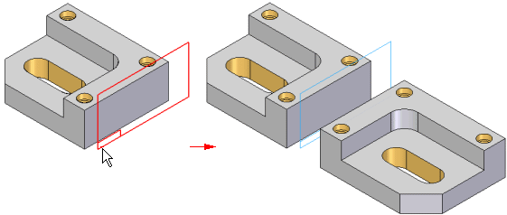
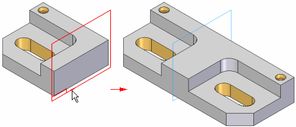

Mirror Copy Part command
Use the Mirror Copy Part command  to mirror and copy selected elements about a plane you select. You use the Select option on the command bar to specify the element type you want to mirror and copy.
You can mirror the design model, a construction body, one or more faces, sketches,
and so on. You can only select one element type each time you use the command.
to mirror and copy selected elements about a plane you select. You use the Select option on the command bar to specify the element type you want to mirror and copy.
You can mirror the design model, a construction body, one or more faces, sketches,
and so on. You can only select one element type each time you use the command.

When mirroring the design model, if the mirrored copy touches the original body, they are combined into one part automatically.
